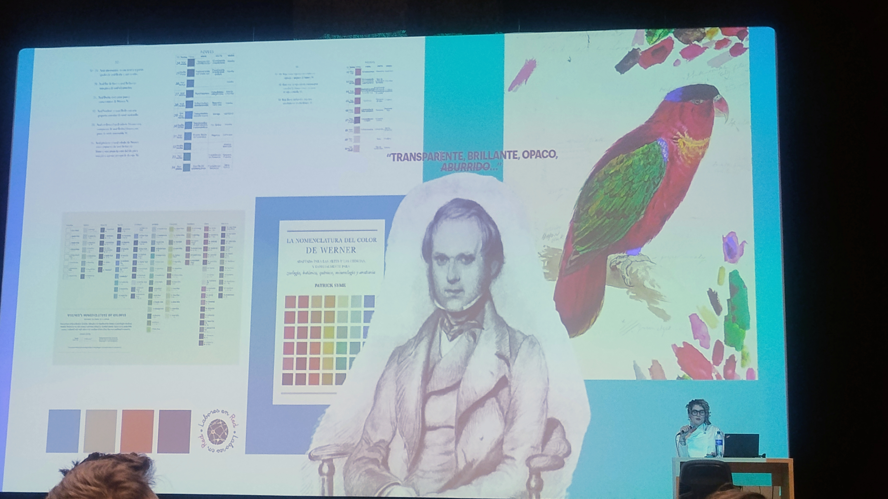
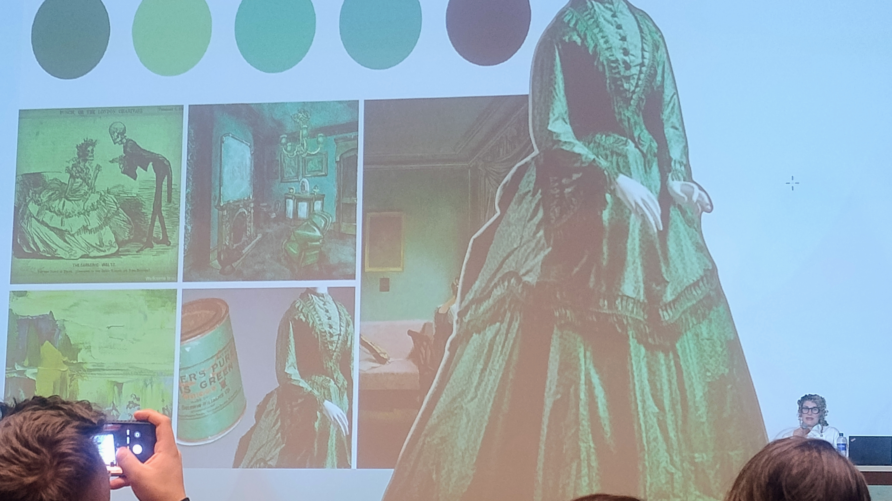
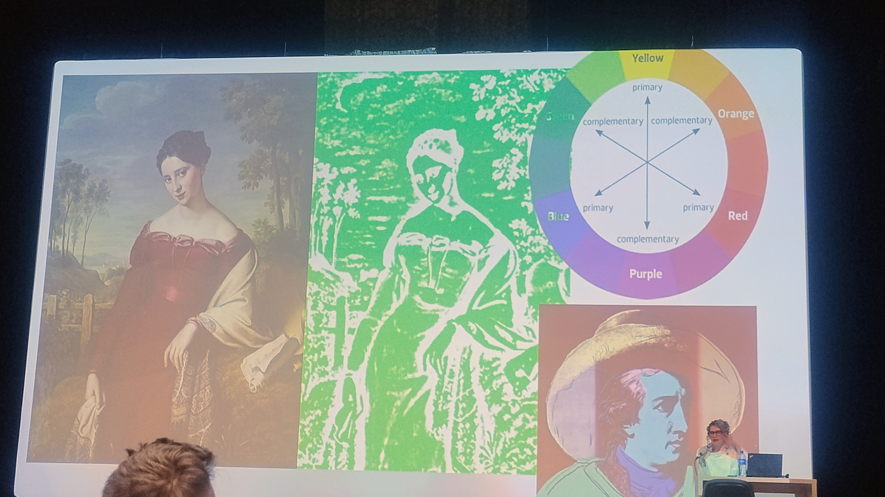
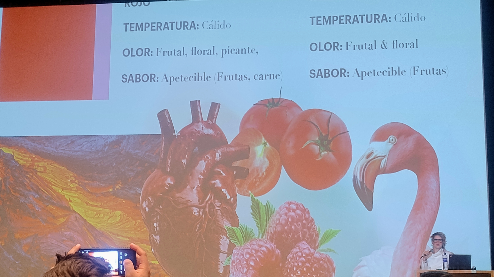
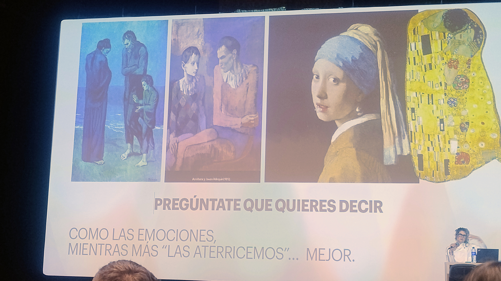
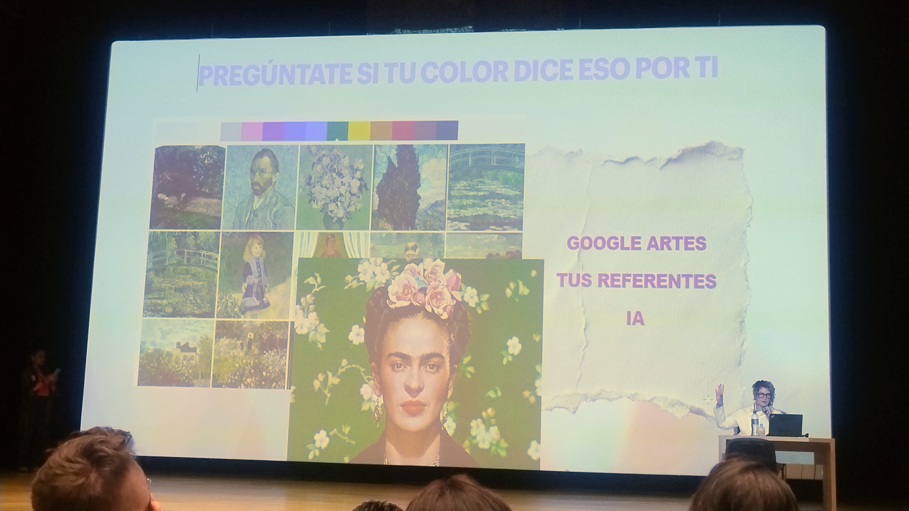
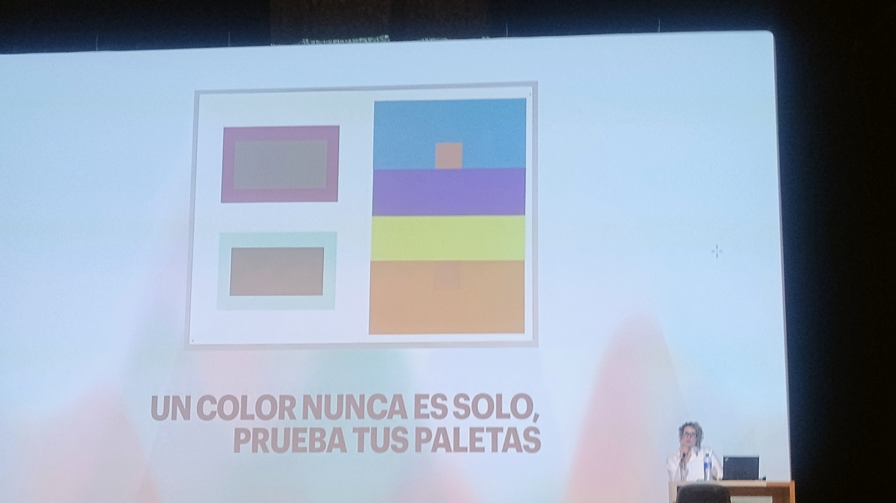
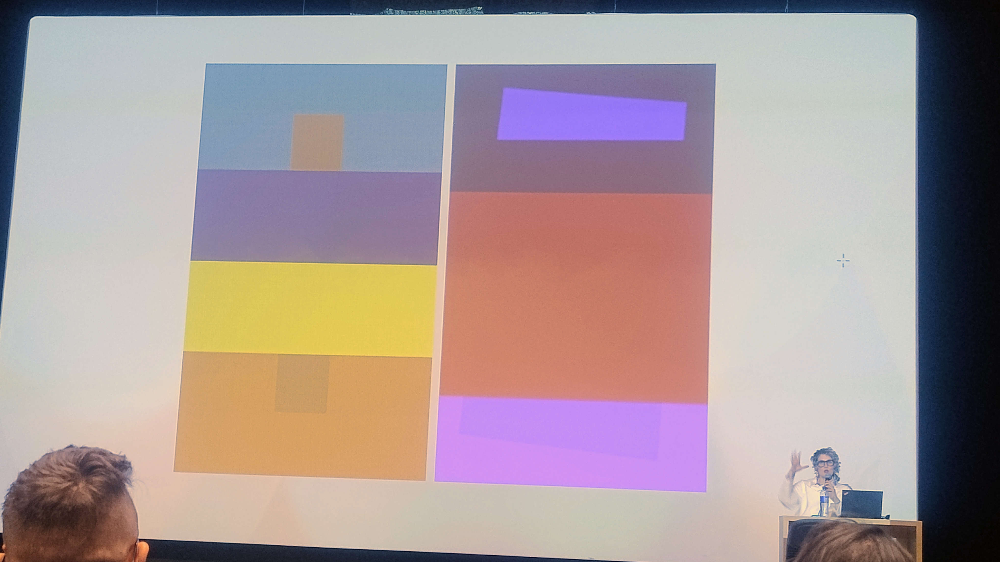
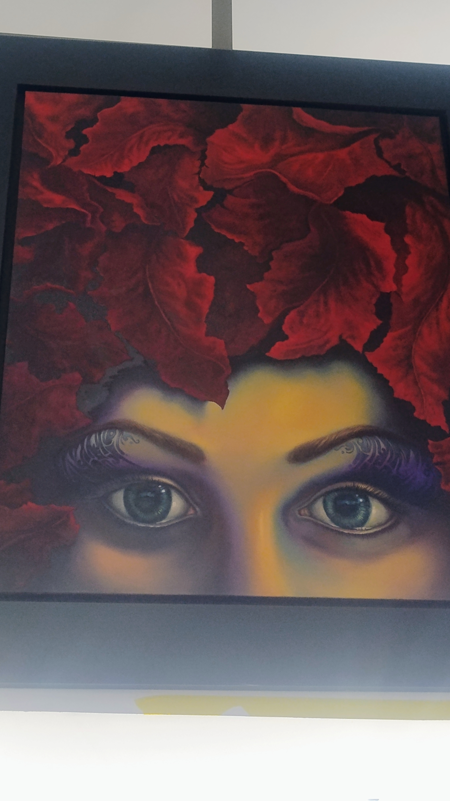

Sección principal
Mi Experiencia en Moda ECCI
Galería del Evento



10 Fotos del Evento












Aprendizajes & Reflexiones
Palabras Clave / Keywords
Teoría del Color
Pantone
Semiología
UX Design
Color Psychology
Design System
Identidad Visual
Contraste
Accesibilidad
Moda Sostenible